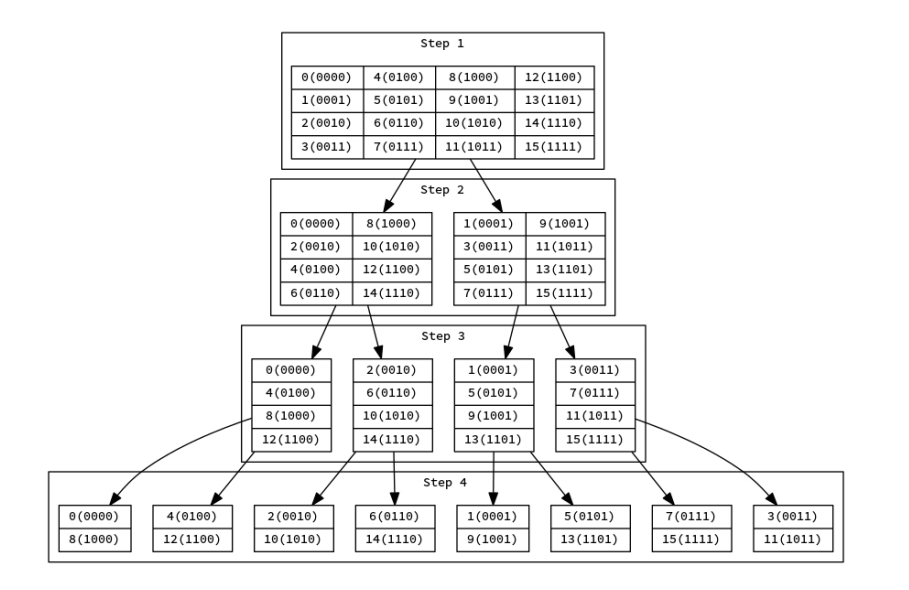
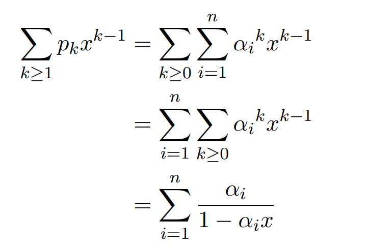
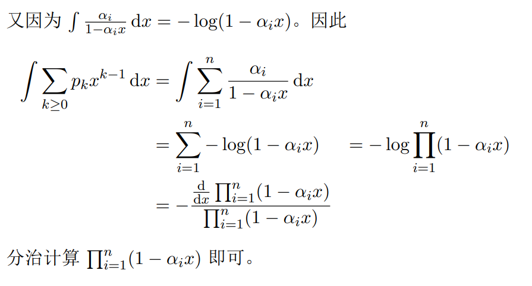
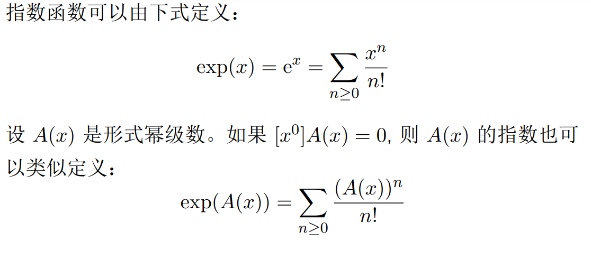
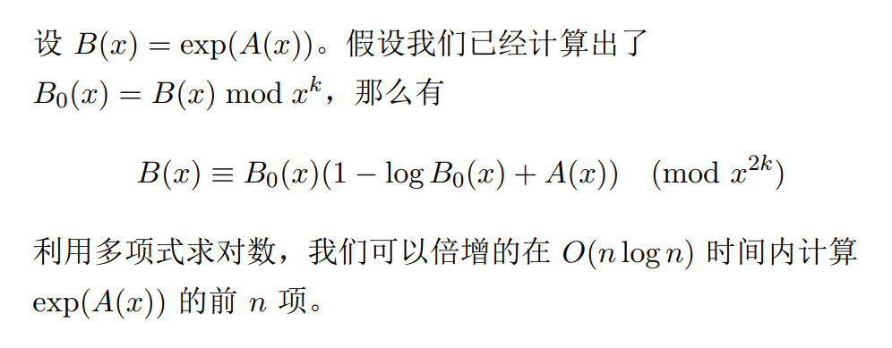

快速傅里叶变换
多项式
一个环 R 上的关于 x 的多项式可以写作
A(x)=i=0∑naixi
其中 ai∈R
x 被称为这个多项式的自由元
多项式的次数被定义为其最高非零次项的次数，记为 degA(x)
多项式运算
设 A(x),B(x) 是次数不超过 n 的多项式
那么加法和减法运算被定义为：
A(x)±B(x)=i=0∑n(ai±bi)xi
显然可以在 O(n) 时间内计算这两个多项式的和或差
卷积
设 a,b 是两个数列，那么这两个数列的卷积 c 的定义为
ck=i+j=k∑aibj
多项式乘法
两个多项式的乘积被定义为：
A(x)B(x)=i=0∑ni=0∑naibjxi+j=k=0∑2nckxk
其中 c 是 a 与 b 的卷积
朴素的按定义计算多项式乘法的时间复杂度是 O(n2) 的
多项式点值表示
给定一个不超过 n 次的多项式 A(x) 以及 n+1 个不同的点 x0,⋯,xn,令 yi=A(xi)
则这 n+1 组 (xi,yi) 唯一的确定了这个多项式 A(x)
这些 (xi,yi) 称作这个多项式的点值表示
如果给出 A(x) 和 B(x) 分别在 x0,⋯,xn 下的点值，则可以在 O(n) 时间内得到 A(x)±B(x) 或 A(x)B(x) 在同一组位置处的点值
系数与点值表示
给出 n 次多项式 A(x) 的各项系数，可以通过求值计算多项式的点值表示
给出 n 次多项式 A(x) 的点值表示，可以通过待定系数，解方程得到多项式的各项系数
得到多项式的各项系数
如何在多项式的系数和点值表示之间快速转换？
这促使我们考虑一组特殊的点值
单位根
仅供参考
满足 xn−1=0 的 x 被称作 n 次单位根
设 ω 是 n 次单位根
如果 ω0,ω1,⋯,ωm(m=n−1) 恰好生成了所有的 n 次单位根（即两两不同），则称 ω 为本原单位根
这等价于 n 是 最小的使得 ωn−1=0 的正整数。我们用 ωn 来表示一个 n 次本原单位根
在复数域 C 上，ωn=exp(n2πi)=cosn2π+isinn2π 是一个本原单位根
下文首先考虑 C 上的多项式
在有限域（即模素数的情况）中，本原单位根与数论中的原根有关
离散傅里叶变换
设 a 是长度为 n 的数列，对 0≤k<n，令
bk=i=0∑n−1ai⋅ωnki
则称 b 为 a 的离散傅里叶变换 (DFT) ，记作 b=F(a)
容易看出，令 A(x)=∑aixi，则 bk 就是 A(x) 在 ωnk 处的点值
因此计算 a 的 DFT 与计算 A(x) 在 ωn0,ωn1,⋯,ωnn−1 处的点值表示是等价的
##离散傅里叶变换的逆变换
对于长度为 n 的序列 a,b，回忆 DFT 的定义 :
bk=i=0∑n−1aiωnki(0≤k<n)(1)
下面我们来证明 (1) 的逆变换(IDFT)如下 :
ak=n1i=0∑n−1biωn−ki(0≤k<n)(2)
考虑将(1)代入bi, 有:
\begin{align*}
\sum_{i=0}^{n-1}b_i{\omega_n}^{-ki}&=\sum_{i=0}^{n-1}{\omega_n}^{-ki}\sum_{j=0}^{n-1}{\omega_n}^{ij}a_j\\
&=\sum_{j=0}^{n-1}a_j\sum_{i=0}^{n-1}{\omega_n}^{-ki}{\omega_n}^{ij}\\
&=\sum_{j=0}^{n-1}a_j\sum_{i=0}^{n-1}{\omega_n}^{i(j-k)}
\end{align*}
我们考虑式子中的i=0∑n−1ωni(j−k)这一部分
若 j=k , 则
i=0∑n−1ωni(j−k)=i=0∑n−11=n
若 j=k, 则由 0≤j,k≤n, 有∣j−k∣<n, 故ωnj−k=1
因此可以由等比数列数列求和的结论得到
\begin{align*}
\sum_{i=0}^{n-1}{\omega_n}^{i(j-k)}&=\sum_{i=0}^{n-1}({\omega_n}^{j-k})^i\\
&=\frac{1-({\omega_n}^{j-k})^n}{1-{\omega_n}^{j-k}}\\
&=\frac{1-({\omega_n}^n)^{j-k}}{1-{\omega_n}^{j-k}}\\
&=\frac{1-1}{1-{\omega_n}^{j-k}}=0
\end{align*}
因此, 有
\begin{align*}
\frac 1n\sum_{i=0}^{n-1}b_i{\omega_n}^{-ki}&=\frac 1n\sum_{i=0}^{n-1}{\omega_n}^{-ki}\sum_{j=0}^{n-1}{\omega_n}^{ij}a_j\\
&=\frac 1n\sum_{j=0}^{n-1}a_j\sum_{i=0}^{n-1}{\omega_n}^{i(j-k)}\\
&=\frac 1nna_k=a_k
\end{align*}
即(2)成立
类似的，可以证明由 (2) 成立可以推出 (1) 成立，故这两式是互逆的
这就是 IDFT
IDFT 是 DFT 的逆变换，也就意味着已知多项式在单位根处的点值，IDFT 能够求出多项式的各项系数. 在这种意义上，这个 过程也可以看作插值
循环卷积
对于两个长度为 n 的序列 a,b，定义
ck=(i+j)modn=k∑aibj
则称 c 为 a 与 b 的循环卷积，记为 c=a∗b
关于循环卷积与 DFT，我们有如下定理：
F(a∗b)=F(a)⋅F(b)
其中 ⋅ 表示逐点乘积
快速傅里叶变换1
按定义，我们可以 O(n2) 实现 DFT 或 IDFT. 快速傅里叶变换是快速计算 DFT 的方法，时间复杂度为 O(nlogn)
当 n 为 2 的幂次的时候，我们可以使用 Cooley–Tukey 算法来实现 FFT
单位根的一些性质
考虑 ωn 与ωm(m=2n), 我们有
(ω2nk)2=ωnkω2nn+k=−ω2nk
设 n=2m. 我们考虑将 A(x) 的项按次数的奇偶性分类：
\begin{align*}
A(x)=\sum_{0\le i<n}a_ix^i&=\sum_{0\le i<m}a_{2i}x^{2i}+\sum_{0\le i<m}a_{2i+1}x^{2i+1}\\
&=\sum_{0\le i<m}a_{2i}x^{2i}+x\sum_{0\le i<m}a_{2i+1}x^{2i}
\end{align*}
定义
\begin{align*}
A_0(x)&=\sum_{0\le i<m}a_{2i}x^i\\
A_1(x)&=\sum_{0\le i<m}a_{2i+1}x^i
\end{align*}
那么 A0(x), A1(x) 都是次数不超过 m 的多项式，并且有
A(x)=A0(x2)+xA1(x2)
##蝴蝶操作
结合单位根的性质，对于 0≤k<m，我们有
\begin{align*}
A({ω_n}^k) &= A_0(({ω_n}^k)^2 ) + {ω_n}^kA_1(({ω_n}^k)^2) \\
&= A_0({ω_m}^k)+ {ω_n}^kA_1({ω_m}^k)\\
A({ω_n}^{m+k})&= A_0(({ω_n}^{m+k})^2)+{ω_n}^{m+k}A_1(({ω_n}^{m+k} )^2)\\
&= A_0({ω_m}^k)−{ω_n}^kA_1({ω_m}^k)
\end{align*}
以上两式常被称为蝴蝶操作
快速傅里叶变换2
通过蝴蝶操作的过程可以看出，如果我们得到了 A0(x),A1(x) 在点 ωm0,ωm1,...,ωmm−1 处的点值，我们可以在 O(n) 时间内计算出 A(x) 在 ωn0,ωn1,⋯,ωnn−1 处的点值
而计算 A0,A1 的点值的过程可以递归分治进行
根据主定理，我们可以在 O(nlogn) 的时间内求出所要的 A(x) 的点值表示
为了快速的进行 IDFT，对比 DFT 与 IDFT 的表达式，可以发现我们只需要将 FFT 过程中用到的 ωn 全部替换为 ωn−1，最后再 乘以 n1 即可。

##位逆序置换
可以观察到，令 rev(x) 表示将 x 的二进制位的顺序反转之后得到的数字，令
ai′=arev(i)
则每次需要对 a 进行的蝴蝶操作在 a′ 中变成了对两个相邻的序列的操作
把 a 转化为 a′ 的过程常称为位逆序置换
非递归的 FFT 实现
因此得到 a′ 后，我们首先对 a′ 的每一对相邻的长度为 1 的子序 列做蝴蝶操作，然后对每一对相邻的长度为 2 的子序列⋯⋯最 后对两个长度为 2n 的子序列做蝴蝶操作，我们就完成了对 a 的 FFT
DFT 与 FFT 都是在 C 中进行的过程
在很多时候，我们往往是在对整数进行操作，并且经常要对某个素数 p 取模
注意到单位根在 DFT 中起了重要的作用，我们来考虑在模素数的时候是否存在和单位跟性质类似的元素
原根
设 p 是素数. 由费马小定理，我们知道对于任意 a 满足 p−a， 有
ap−1≡1(modp)
g 称为模 p 的原根，当且仅当 g0,g1,⋯,gq(q=p−2) 在模 p 意义下互 不相同。 可以证明，模质数的原根总是存在的
原根的性质和本原单位根非常类似. 换句话说，在 modp 意义 下，g 可以被看做一个 p−1 次本原单位根
##数论变换
设 n 满足 n∣p−1. 令 $ωn = g^{\frac{p−1}n} $. 那么有
ωnn=(gnp−1)n≡1(modp)
并且 ωn0,ωn1,⋯,ωnn−1 互不相同
于是 ωn 在 modp 意义下具有 n 次本原单位根的性质。我们 以利用它类似的定义 DFT. 这被称为数论变换NTT
快速数论变换
如果 n=2k，则也可以利用与 FFT 类似的方式快速的计算数论变换。 但是因为 2k=n∣p−1，这意味着快速数论变换对所选取的素数模数有着特殊的要求
比如常见的模数
PUOJ=998244353=7×17×223+1
FFT 的基本应用
FFT 计算的是 DFT，因此 FFT 的直接应用主要与卷积有关
- 直接计算卷积
- 进行多项式相关运算
- 卷积与字符串匹配
计算卷积
注意到利用 FFT，我们能直接进行的是长度为 2k 的循环卷积
如果要进行一般的卷积运算，注意到两个长度为 n 的序列的卷积长度为 2n−1，因此一般会选择 k 使得 2k≥2n−1，然后对序列进行长度为 2k 的 FFT
如果要进行一般的长度的循环卷积，则使用普通卷积来模拟
-
利用 FFT 进行多项式乘法
多项式乘法就是系数进行卷积的过程，因此可以使用 FFT 计算
-
利用 FFT 进行高精度乘法
高精度乘法就是多项式乘法，只需处理进位即可
卷积与字符串匹配
假设 x,y 是两个用正整数表示的字符，那么 x=y 当且仅当 (x−y)2=0
若 $a = (ai) $与 b=(bi) 是长度分别是 n,m 的两个字符串，那么 b 在 a 的第 k 个位置匹配当且仅当
i=1∑m(ai+k−bi)2=i=1∑mai+k2+i=1∑mbi2−2i=1∑mai+kbi=0
注意到其中前两项容易计算，而第三项可以化为卷积，因此可以使用 FFT 计算
##含有通配符的字符串匹配
如果 b 中含有一种特殊的字符（通配符）可以与 a 的任意字符匹配，如何求 b 在 a 中的匹配？
不妨把通配符用 0 表示，如果 x 是普通字符，y 可能是通配符， 那么 x 与 y 匹配当且仅当 x=y 或 y=0，也就是 y(x−y)2=0
那么字符串的匹配就可以表达为：
i=1∑mbi(ai+k−bi)2=i=1∑mai+k2bi+i=1∑mbi3−2i=1∑mai+kbi2=0
类似的，这个转化后也可以利用 FFT 计算
多项式与形式幂级数
##形式幂级数
环 R 上的形式幂级数形如
A(x)=n≥0∑anxn
其中 an∈R. x 称为这个形式幂级数的自由元
多项式是仅有有限项非零的形式幂级数
因此，形式幂级数可以 看成是对多项式的推广
一般形式幂级数中的自由元不带入具体数值
##运算
形式幂级数的运算规则与多项式的运算规则是类似的
同样多项式类似，形式幂级数的乘法对应两个无穷数列的卷积
生成函数
可以看出，形式幂级数 A(x) 自然的对应着一个无穷的数列 a=(a0,a1,a2,⋯)
因此 A(x) 称为数列 a 的生成函数
模意义下的多项式
设 A(x),B(x),P(x) 是多项式。我们称 A(x)≡B(x)(modR(x))，如果存在多项式 Q(x)，使得
A(x)−B(x)=P(x)Q(x)
因此，多项式也可以在模意义下讨论
在实际运算中，我们时常只关心多项式（形式幂级数）的前有限 项，并且希望多项式（形式幂级数）在这种意义下参与运算
如 果只关心前 n 项，我们采用记号 modxn 表示
##形式幂级数的逆元
设 A(x) 是形式幂级数。如果 a0=0, 那么存在形式幂级数 B(x)，使得 A(x)B(x)=1. 这时，称 B(x) 是 A(x) 的逆元，记 作 B(x)=A(x)1
通过比较系数，我们可以得到:
i=0∑kaibk−i=[k=0]⇒⎩⎪⎨⎪⎧b0=a01bn=−a01i=0∑n−1an−ibi
##形式幂级数的除法
通过定义逆元，我们可以定义除以一个形式幂级数为乘以其逆元
##斐波那契数列
定义斐波那契数列满足 f(0)=f(1)=1,f(n)=f(n−1)+f(n−2)
求斐波那契数列的生成函数
可以发现我们有 F(x)=(x+x2)F(x)+1. 因此答案是
F(x)=1−x−x21
逆元的计算
假设我们已经计算出了 B0(x)=B(x)modxk，那么我们有
A(x)B0(x)≡1(modxk)
这意味着
(A(x)B0(x)−1)2≡0(modx2k)
那么我们有
B(x)≡B0(x)(2−A(x)B0(x))(modx2k)
由此可以计算出 g(x) 的前 2k 项
根据主定理，计算 B(x)modxn 的时间复杂度为 O(nlogn)
导数与积分
设 A(x)=n≥0∑anxn 是形式幂级数。定义 A(x) 的（形式）导数为
A′(x)=dxdA(x)=n≥1∑nanxn−1
类似的，定义定义 A(x) 的（形式）积分为
∫A(x)x=n≥0∑n+11anxn+1
对数
（自然）对数可以由下式定义：
log(1+x)=n≥1∑(−1)n−1nxn
设 A(x) 是形式幂级数。如果 [x0]A(x)=1, 则 A(x) 的对数也可以类似定义：
logA(x)=n≥1∑(−1)n−1n(A(x)−1)n
我们有
dxdlogA(x)=A(x)A′(x)
因此，
logA(x)=∫A(x)A′(x)dx
等幂和
给出 n 个数 α1,...,αn 定义 pk=i=1∑nαik
对于 1≤k≤n， 求 pk,n≤105
注意到 k≥0∑αkxk=1−αx1因此


指数


附件下载